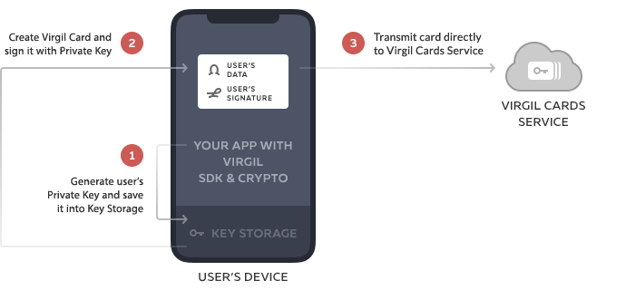

This tutorial app explains the basics of using Virgil’s SDK. By the end of the tutorial, you’ll
be a master of End-to-End Encryption.
What is E2EE? When you type in a chat message in your mobile app, it gets “client-side”
encrypted on the device (or in your browser) and gets decrypted only when your chat partner
received and displays the message in her chat window.
Because data is encrypted on the client devices, neither the networks, nor the servers/clouds,
nor you have a clue of what the heck your users are chatting about.
Step 0: Configure SDK
First of all we need to configure our client side SDK with all necessary libraries. We offer our own
solutions, like VirgilCrypto or KeyStorage, but you can use your own solutions if you don't
trust us (and you don't have to!).
Here you can see flow for authentication calls to Virgil Card Service and Your App Server. Since we simplify
demo server to one endpoint which respond us with JWT token, you don't need to authenticate
yourself on demo server.
Step 1: Create & publish user keys at signup
Generate a private & public key for your users when you sign them up.
What’s a private/public key pair? You give out your public key to all users, who’ll use it to encrypt
data for you that only your private key can decrypt.

Lets create cards for Alice and Bob with our createCard function:
creating cards....
Step 2: End-to-End Encrypt & Decrypt
Now, your users can simply look up each other’s public keys by their user IDs and encrypt data to each
other:
// loading bob cards and encrypting message and then decrypting
// waiting for message encryption
And finally: Sign and Verify
How does Bob know that the message was indeed sent by Alice? Simple: Alice signs the message with her
private key and Bob verifies the signature using Alice’s public key!